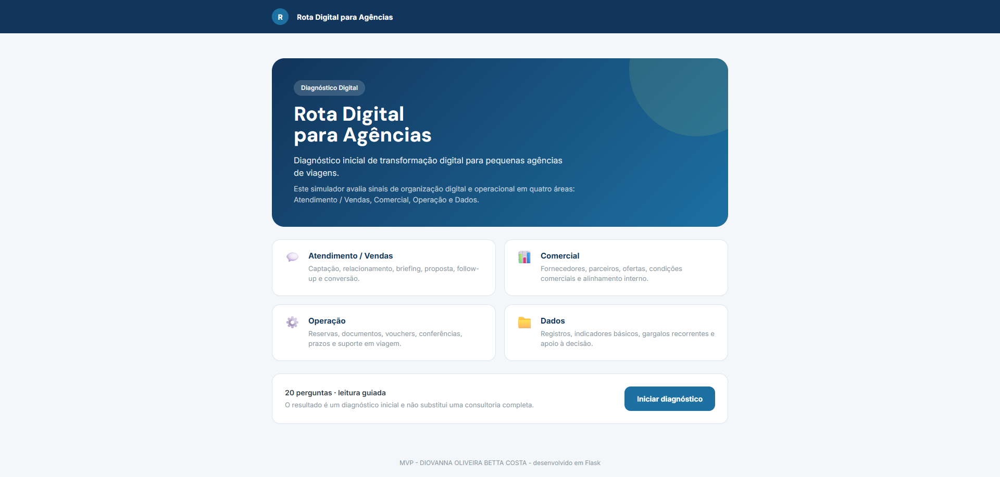
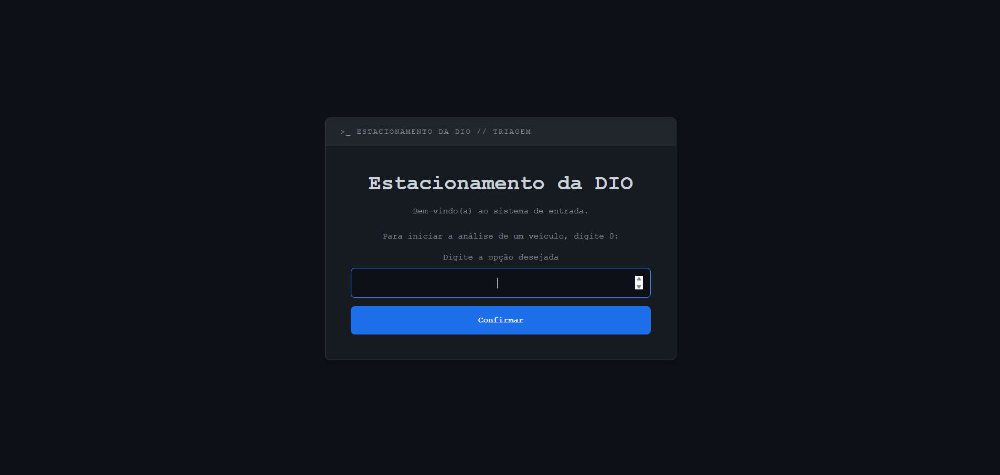
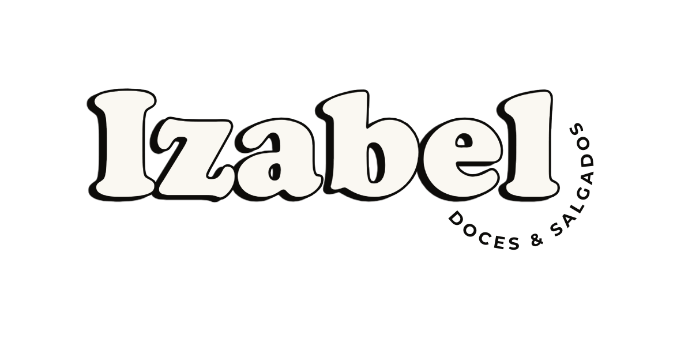
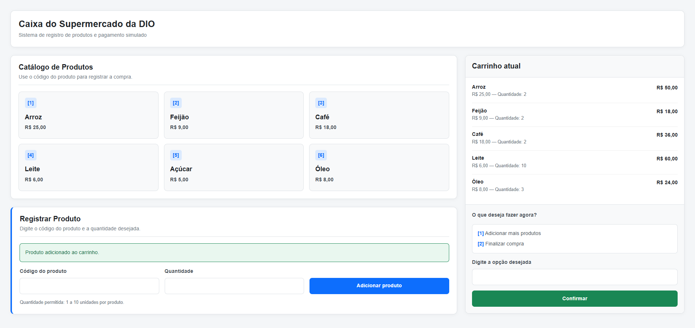

Produto, Requisitos e Análise de Negócios
Levantamento e análise de necessidades para transformar problemas de negócio em soluções estruturadas.
Profissional com experiência em product marketing, dados e melhoria de processos, atualmente cursando Análise e Desenvolvimento de Sistemas no SENAC RJ.
Projetos práticos em desenvolvimento web, regras de negócio, UX e automação, conectando problemas reais a soluções simples e bem estruturadas.
Sou bacharel em Turismo pela UFRRJ e curso Análise e Desenvolvimento de Sistemas no SENAC RJ. Minha trajetória reúne product marketing, análise de dados, relacionamento com stakeholders e melhoria de fluxos em ambientes digitais.
No portfólio, aplico esse repertório em projetos que envolvem levantamento de requisitos, regras de negócio, UX, desenvolvimento web e organização de dados. Meu foco é criar soluções claras, documentadas e úteis para usuários, equipes e tomada de decisão.
Necessidades, regras de negócio, histórias de usuário, critérios de aceite e MVP.
Projetos com Python, Flask, HTML, CSS, Bootstrap, Git e GitHub.
Jornadas, fluxos, protótipos, usabilidade e organização de informações.
Análise, dashboards, indicadores, relatórios e apoio à tomada de decisão.
Levantamento e análise de necessidades para transformar problemas de negócio em soluções estruturadas.
Construção de aplicações web e sistemas simples, com foco em lógica, fluxo, validação de dados e organização do código.
Organização de fluxos e interfaces a partir da jornada do usuário, clareza visual e facilidade de uso.
Análise e organização de informações para apoiar decisões, acompanhar indicadores e entender resultados.
Atuação com melhoria de fluxos, organização de demandas e comunicação entre áreas, clientes e stakeholders.
SENAC RJ
Formação prática em desenvolvimento de sistemas, com foco em programação, banco de dados, engenharia de software, UX, front-end e projetos integradores. Atualmente, aprofundo modelagem de sistemas, estrutura de dados, design de interfaces e programação, aplicando esses conhecimentos em projetos digitais.
Universidade Federal Rural do Rio de Janeiro — UFRRJ
Trabalho de conclusão de curso sobre agências de turismo em Nova Iguaçu e caminhos profissionais de turismólogos formados na UFRRJ.
Atuação em empresas do setor de turismo e tecnologia aplicada ao turismo, com experiência em product marketing e análise de dados em ambientes digitais, atuação em fluxos operacionais, relatórios, dashboards, relacionamento com stakeholders e melhoria de processos.
Zendesk, ClickUp, WordPress, SQL, BigQuery, Google Analytics, Google Search Console, Metabase e Google Sheets / Excel.

MVP em Python e Flask para diagnosticar o nível de maturidade digital de pequenas agências de viagens, avaliando atendimento, comercial, operação e dados.
Sistema em Python para simular cadastro de pacientes e registro de atendimentos em uma clínica, utilizando Programação Orientada a Objetos.

Aplicação web em Flask que simula uma triagem de entrada em estacionamento, aplicando regras de negócio, condicionais e fluxo guiado.

Site vitrine desenvolvido para uma marca de doces e salgados artesanais, com páginas de apresentação, cardápio e orientações de encomenda.

Simulador de caixa de supermercado em Flask, com catálogo, carrinho temporário, cálculo de desconto e pagamento simulado.
Cisco Networking Academy
Fundamentos técnicos em redes, endereçamento IP, conectividade e solução básica de problemas.
Google Career Certificates · Coursera
Formação em análise de dados com foco em pensamento analítico, limpeza e organização de dados, SQL, planilhas, visualização de dados e tomada de decisão orientada por dados.
Hurb
Fundamentos de metodologias ágeis, colaboração, organização de demandas, ciclos iterativos e práticas aplicadas a projetos.
HubSpot Academy
Fundamentos de marketing digital, jornada do cliente, conteúdo, atração de usuários e comunicação orientada a performance.
{kind=link}
{kind=link}
{kind=link}
{kind=link}